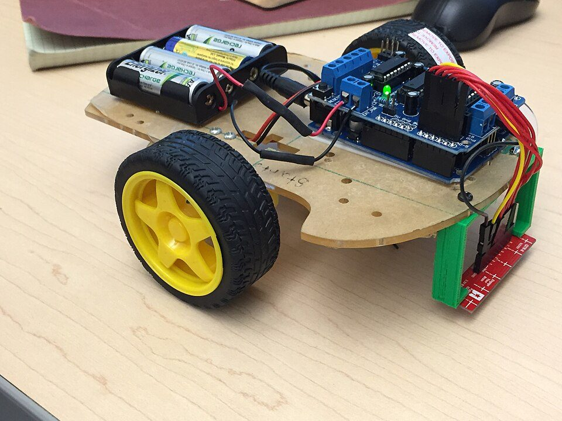

What We Do
The club brings together students from engineering, computing and science courses who want to learn robotics by actually building things. Our main activities are:
Hands-On Projects
Members work in small teams on real builds such as line-following robots, robotic arms and obstacle-avoiding cars. All tools and components are provided in the lab.
Learn more about the clubCompetitions
Every year we enter events such as the Inter-University Robotics Challenge and RoboFest Kenya. Teams are selected during the Saturday build sessions.
View our events calendarLearn Together
Weekly workshops cover Arduino programming, sensors, motor control, CAD and 3D printing. Beginners are paired with senior members, so no previous experience is required.
See the weekly timetableSpotlight: Our Line Follower

More photos from our build sessions and competitions are available on the gallery page.